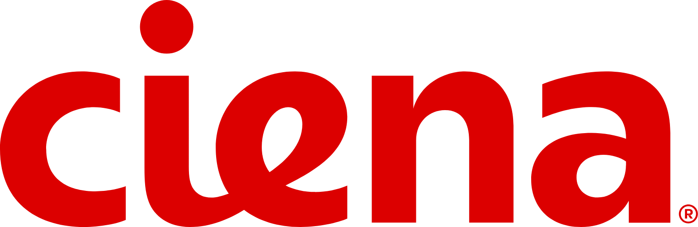
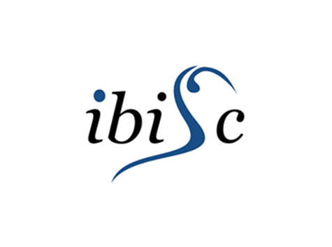
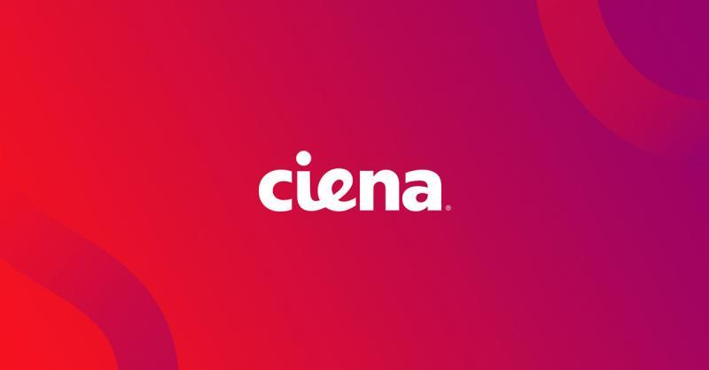

About Me
Of Algerian Nationality and Canadian Citizenship, Graduated from Two Separate Higher Education Institutions in France : Grande École et Université Paris Dauphine-PSL ( Dauphine Compus & AgroParisTech ) in 2014 and Université Paris 8 Vincennes Saint-Denis in 2012 with 02 Master of Research - MRes in Computer Science ( Cum Laude honor ) after being Graduated from Université Mouloud Mammeri de Tizi-Ouzou ( Algeria ) in 2010 with a Bachelor of Computer Science - BCompSc ( Cum Laude honor ).
Software Engineer 3 with 8+ years experience developing software using the Java ecosystem technologies such as Java 8+, Spring Framework 6+, JUnit, PostgreSQL, Redis, MongoDB, Docker, Openapi/Swagger, to develop Desktop, RESTful Webservices, and Microservices by applying Agile Scrum methodology.
Please refer to my LinkedIn and GitHub profiles for more information.After 5.4 amazing years developing a JavaFX Desktop Software using Java 11, JavaFx/OpenJFX and Spring Core Framework at Ciena Corporation as a full time employee dedicated to the Optical Networking domain (reporting to the Director Service Innovation R&D at Ciena Corporation) to aid the Ciena's network engineers on their daily tasks, I resigned from Ciena Canada Quebec on July 29th, 2022 which triggered a full background check.
During my experience at Ciena Corporation I led the software development team of 04 Software developers contractors and 02 Internships students as Algerian Citizen Native and Permanent Resident (PR) of Canada using the Agile Scrum methodology for more than 03 years.
Currently looking for a career advancement following my Master of Research - MRes, Computer Science & Intelligent Systems at Grande École et Université Paris Dauphine-PSL Educational Credential Assessment provided by the Comparative Education Service (CES) of the University of Toronto.
Do not hesitate to reach out to me for more information.
Contact
Gravatar
Professional Skills
Work Experience
- Work to provide software, services and cost reduction for Global Product and Services at Ciena Corporation.
- Work with end to end responsibilities from requirements to implementation and deployment.
- Apply the latest industry technologies (Linux, Docker) to develop and support inhouse, open source, and commercial software.
- Interact with a globally distributed team of product designers and engineers.
- Java 11 · Docker · Git · Maven · Eclipse · Linux · JIRA · Confluence · Bitbucket
- Supervisory Organization : GP&S Packet Optical Release Engineering and Tools at Ciena Corporation.
- Professional and Higher Categories : Professional Level 3 ( P-3 ).
- Lead the software development team using Agile Scrum methodology.
- Decide with the team how to approach tasks and develop a plan to accomplish them.
- Drive product design and analysis.
- Perform development, unit/integration testing, individually and in collaboration with the team.
- Perform code reviews.
- Create and maintain internal technical documentation.
- Troubleshoot software issues and work with the team to identify the cause.
- Maintain the continuous integration and deployment tools.
- Coordinate and communicate information to team members and stakeholders.
- Resolve issues and conflicts that may arise during sprint execution.
- Support the director in allocating software developer resources.
- Java 11 · Spring Boot 2 · Amazon S3 · JavaFX · Software Development · Agile Project Management · Git · Maven · JUnit · UML · Eclipse · JIRA · Confluence · Bitbucket · Design Patterns · TL1
- Supervisory Organization : GP&S Service Innovation R&D at Ciena Corporation.
- Professional and Higher Categories : Professional Level 3 ( P-3 ). It's an Internal Promotion.
- Develop and Design features to analyze and visualize telecom networks.
- Participate in all stages of the software development.
- Collaborate with the software development team to ensure successful software delivery on time.
- Enhance coding standards and development guidelines.
- Participate in code/design reviews.
- Maintain the internal technical documentation.
- Java 11 · Spring Boot 2 · Amazon S3 · JavaFX · Git · Maven · JUnit · UML · Bitbucket · JIRA · Confluence · Eclipse · Software Development · Agile Project Management · Design Patterns · TL1
- Supervisory Organization : GP&S Service Innovation R&D at Ciena Corporation.
- Professional and Higher Categories : Professional Level 2 ( P-2 ).
- Participate to the continuous code improvement and knowledge transfer.
- Participate to the planification and analysis of new features.
- Participate to the user L3 technical support.
- Java 8 · JavaFX · Agile Methodologies · Git · Maven · Eclipse
- Supervisory Organization : Service R&D Software at Dental Wings, a Straumann Group Brand.
- Professional and Higher Categories : Professional Level 1 ( P-1 ).
- Develop adaptive solutions related to the networking and telecom engineering.
- Participate in all stages of the software development.
- Work in close collaboration with the telecommunication engineers.
- Understand the requirements involved in the evolution of the system.
- Java 8 · Git · Maven · Bitbucket · JUnit · Confluence · Eclipse · JavaFX · Software Development · Agile Project Management · Design Patterns · TL1 · Swing
- Supervisory Organization : Entreprise Content Management ( ECM ) at Larochelle Groupoe Conseil In.
- Professional and Higher Categories : Professional Level 1 ( P-1 ).
- Lyes SEFIANE | Verification of Employment at Larochelle Groupe Conseil Inc.
- Lyes SEFIANE | Consultant, Java Software Developer Official Offer Letter at Larochelle Groupe Conseil Inc.
- Lyes SEFIANE | Employment Integration Program for Immigrants and Visible Minorities (PRIIME).
- Lyes SEFIANE | Contingent Worker at Ciena Corporation.
- Lyes SEFIANE | Consultant, Java Software Developer Resignation Letter at Larochelle Groupe Conseil Inc.
- Develop and maintain the company’s vision, mission statement, and strategic plan.
- Setup the systems and procedures to ensure the company’s success over time.
- Review the financial statements and other reports to assess the company’s performance.
- Identify new opportunities for revenue growth, including new products or services.
- Evaluate new technologies to determine their potential impact on the company’s operations.
- Establish and maintain relationships with suppliers, customers, and other business contacts.
- Program Management · Software Development · Agile Project Management
- Supervisory Organization : IT at IT-DMSIC.
- Professional and Higher Categories : CEO.
- Study and analyze the distributed systems domain bibliography.
- Define and implement a prototype model with Erlang on Sim-Diasca.
- Test and validate the results.
- Erlang · Software Development · Design Patterns · Git · UML · Eclipse · Linux
- Supervisory Organization : SINETICS, ASICS at EDF R&D
- Professional and Higher Categories : Intern.
- Analyze coalition formation algorithms related to the distributed systems domain.
- Develop a generic coalition formation protocol with Java and Jess.
- Test, validate the results.
- Java 7 · Software Development · Design Patterns · Git · JUnit · UML · Eclipse
- Supervisory Organization : IRA2 ( Interaction, Réalité virtuelle & Augmentée, Robotique Ambiante ).
- Professional and Higher Categories : Intern.
- Analyze negotiation protocol algorithms related to the distributed systems domain.
- Develop a generic negotiation-based protocol with Java and Jade.
- Test, validate the results.
- Java 6 · Jade · Software Development · Design Patterns · Git · UML · Eclipse
- Supervisory Organization : IRA2 ( Interaction, Réalité virtuelle & Augmentée, Robotique Ambiante ).
- Professional and Higher Categories : Intern.
- Lyes SEFIANE | Internship Completion Letter at Laboratoire IBISC, Université d’Evry, Université Paris-Saclay.
- Lyes SEFIANE | Internship Recommendation Letter at Laboratoire IBISC, Université d’Evry, Université Paris-Saclay.
- Lyes SEFIANE | Internship Agreement between Université Paris 8 Vincennes Saint-Denis, Lyes SEFIANE & Laboratoire IBISC, Université d’Evry, Université Paris-Saclay.
- Develop a vehicle rental application with Java and Swing.
- Design all the stages of the application with UML using MERISE methodology.
- Design and Implement the application's relational database with SQL and PostgreSQL.
- Java 6 · Swing · UML · SQL · PostgreSQL · Eclipse
- Supervisory Organization : SIE ( Système d’Information Etendu ).
- Professional and Higher Categories : Intern.
Education
Master ( M2, BAC+5 ) : Graduate Degree Granted After Completing 05 Years of Study. Program Jointly Awarded by Two Separate Higher Education Institutions : Grande École et Université Paris Dauphine-PSL and Grande École AgroParisTech. 300 ECTS ( European Credits Transfer System ).
The purpose of this academic background is to provide to the students the theoretical and practical needed for designing the future generations of complex computer systems, often distributed over a network for diagnostics, design and decision making. More specifically, the goal is to master the conceptual, semantic and algorithmic problems raised by the development of new software technologies associated with the Internet :
- Web services.
- Distributed systems.
- Advanced database systems.
- Data mining.
- Data warehouse.
These innovative technologies are applied to the software development and engineering specialty.
- Software Development · Machine Learning · Weka · Computer Science · Multi-agent Systems
- Lyes SEFIANE | Master's degree, Computers and Intelligent Systems at Université Paris Dauphine-PSL.
- Lyes SEFIANE | Master's degree, Computers and Intelligent Systems Certificate of Completion at Université Paris Dauphine-PSL.
- Lyes SEFIANE | Master's degree, Computers and Intelligent Systems at Université Paris Dauphine-PSL Educational Credential Assessement From University of Toronto.
Master ( M2, BAC+5 ) : Graduate Degree Granted After Completing 05 Year of Study. 300 ECTS ( European Credits Transfer System ).
The objective is to train researchers of very high level prepared to acquire jobs in companies specialized in :
- Distributed systems.
- Big data.
- Information systems.
- Software Development · Machine Learning · Computer Science · Multi-agent Systems
Maîtrise ( M1, BAC+4 ) : Graduate Degree Granted After Completing 04 Year of Study. 240 ECTS ( European Credits Transfer System ).
The main purpose of Computer and Human Sciences specialty is to teach and train engineers and researchers prepared to :
- Engage in the research path regarding the current issues by preparing an AI and Computer Science PhD in the public/private sector of R&D or found a company in these areas.
- Join companies specialized in computer information system, entertainment video game publishers or software engineering and development.
- Join companies that require Big Data solutions for R&D applications and BPMN workflow resource optimization.
- Software Development · Machine Learning · Computer Science · Multi-agent Systems
Licence ( L3, BAC+3 ) : Undergraduate Degree Granted After 03 Years of Study. 180 ECTS ( European Credits Transfer System ).
The purpose of the Licence, Informatique Générale of the Université Mouloud Mammeri de Tizi-Ouzou is to provide enough knowledge and academic background to pursuit studies in IT and Computer Science domains such as :
- Software development and engineering.
- Data mining.
- etc...
- Software Development · Computer Science
Recommendations

Kevin RUDDY
EMEA Service Delivery at Ciena Corporation
Belfast, Northern Ireland, United Kingdom
June 09th, 2025
Kevin RUDDY Was Senior to Lyes SEFIANE But Didn't Manage Lyes SEFIANE Directly
"Lyes SEFIANE, I want to recognize your outstanding effort demonstrated during the DCN visualization in NAVA. You have produced an excellent solution to a complex problem. You performed this on time and demonstrated our core value of Velocity. You are also a really nice guy to work with, and I appreciate your effort very much".
Michael PROCTOR
Senior Product Manager at Ciena Corporation
Montreal, QC, Canada
June 09th, 2025
Michael PROCTOR worked with Lyes SEFIANE on the same team
"As a key development lead, Lyes SEFIANE helped transition product owner responsibilities to me for a complex telecom network visualization and services deployment tool. His attention to detail, effective product direction impact summarization and collaboration was greatly appreciated".
Olivier BOUDEVILLE & Samuel THIRIOT
Research & Development Engineer at EDF R&D
Clamart, Hauts-de-Seine, France
September 30th, 2014
Lyes SEFIANE Managed by Olivier BOUDEVILLE & Samuel THIRIOT
More Informattion : Lyes SEFIANE | Recommendation Letter.

Antonio ANDRIATRIMOSON
PhD Candidate at Laboratoire IBISC
Évry, Essonne, France
September 30th, 2011
Lyes SEFIANE Managed by Antonio ANDRIATRIMOSON
More Informattion : Lyes SEFIANE | Recommendation Letter.
Honors & Awards

Ciena Cares : Velocity
David Gowdy, Services Solution Architect
Ciena Corporation · October 28th, 2020
Belfast, Northern Ireland, United Kingdom
"Hi Lyes Sefiane 🇩🇿 🇨🇦 - just a note to express appreciation for the extra mile you went to help out with the Rogers network collection as the project quickly approaches a deadline. This bravo could also be for innovation due to you realizing the building blocks of the solution lay within NAVA, however the speed in which you turned around the result and re-worked parts of the tool was the most impressive. Enjoy your vacation, I think you ve earned it!"
Ciena Cares : Velocity
Kevin Ruddy, Senior Solution Architect, Services Technology Office
Ciena Corporation · January 23rd, 2020
Belfast, Northern Ireland, United Kingdom
"Lyes Sefiane 🇩🇿 🇨🇦, I want to recognize your outstanding effort demonstrated during the DCN visualization in NAVA. You have produced an excellent solution to a complex problem. You performed this on time and demonstrated our core value of Velocity. You are also a really nice guy to work with, and I appreciate your effort very much."
Ciena Cares : Outstanding People
Florian Bordus, Product Owner
Ciena Corporation · November 22nd, 2019
Montreal, QC, Canada
"Lyes Sefiane 🇩🇿 🇨🇦 - I wanted to thank you for the initiative you took to create the weekly report template for NAVA and enforcing the team to adhere to it. This will help greatly in managing the project and give us an easy way to monitor progress. Great job ! Thanks again !"
Ciena Cares : Innovation
Florian Bordus, Product Owner
Ciena Corporation · January 25th, 2019
Montreal, QC, Canada
"Lyes Sefiane 🇩🇿 🇨🇦,I want to take a moment to recognize your effort in the development of the DCN Viz feature in NAVA. This tool was requested by BT when they manifested their interest in purchasing NAVA. You showed a lot of initiative by ramping up on your own and finding innovative solutions to deliver the feature with great success. The feedback we got from BT was very positive and they were extremely impressed with the DCN functionalities. Thanks again for your efforts and overall commitment to NAVA."
Projects
Java / Spring Framework / Spring Cloud Gateway
API Gateway with Spring Cloud Gateway 🇩🇿 🇨🇦
Common API Gateway built with Spring Cloud Gateway to implement the following features:
- Routes and Load Balancing.
- Rate Limiting with Redis.
- Circuit Breaker with Resilience4j.
- Exception Handling with Retry.
- Service Discovery with HashiCorp Consul.
- Tracing with Zipkin.
Java / Spring Framework / MongoDB / Redis / Docker / Zipkin
Grocery Items Management 🇩🇿 🇨🇦
Grocery Items Management is an API implemented to expose grocery items resources via REST supported by a microservices architecture using Java 17, Spring Framework 6, Redis, MongoDB, HashiCorp Consul and Zipkin deployed via docker-compose.
Learn MoreJavaFx / Java / Spring Framework
JavaFx Desktop User Interface 🇩🇿 🇨🇦
Grocery Items Management User Interface is a JavaFX Desktop interface created to consume Grocery Items Management exposed resources via REST using Spring WebFlux (WebClient - a reactive and non-blocking interface for HTTP requests).
Learn More
Spring Framework / Apache Kafka / PostgreSQL / MongoDB / Redis / Docker
Multi-Element Relationally Interconnected Topology 🇩🇿 🇨🇦
The Multi-Element Relationally Interconnected Topology is a Microservices Mini-Project that aims to provide an answer to the following problematic :
> How to design an interconnected elements model in the context of the Graph theory domain supported by Microservices architecture (and why not at scale !) ?
Prometheus / Grafana / Spring Framework / SQL / NGINX / Docker / Flyway
Microservices Monitoring and Observability 🇩🇿 🇨🇦
The purpose of this microservices is to expose a graph representation of Network Devices with a relational approach as RESTful Webservice, developed with Java ecosystem, leveraging HTTP methods described by the RFC 2616 protocol.
Learn MoreSpring Framework / Docker Swarm / Kubernetes / ActiveMQ / Consul
Event-Driven Architecture using Apache ActiveMQ 🇩🇿 🇨🇦
The purpose of this microservices is to implement service to service communication via asynchronous message processing approach based on Virtual Topics (ActiveMQ) using Java ecosystem technologies.
Learn More